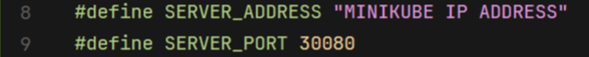
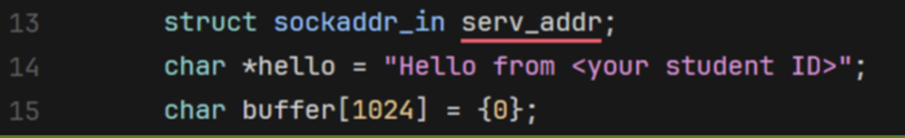

Task 1: Launching K8s and deploy our containers
Launch your Kubernetes cluster
1. Start the Kubernetes cluster
minikube start
2. Get the instructions to point your docker client to point to the minikube docker daemon
minikube docker-env
3. Check the status of your minikube deployment
minikube status
Deploy the containers into the cluster
1. Enter the k8s folder and input the following command:
kubectl apply -f deployment.yaml
kubectl apply -f service.yaml
2. Check the status of your deployment
kubectl get pods
kubectl get deployment
kubectl get services
Note: You need to include the screenshot of the command output above in your report. (10 points)

3. Answer the following questions and include the answers in your report:
- What is Kubernetes? Why do we need it? (5 points)
- Please explain the concepts of
Deployment,ServiceandPod. (5 points) - Why k8s use pod to manipulate the application instead of the container. (5 points)
- What is
Replica Setin Kubernetes? (5 points) - Why can the client successfully communicate through port 30080 when the server is listening on port 8888? (10 points)
(Optional) Check if your container is running correctly on the minikube
1. Get the ip address of the minikube:
minikube ip
2. Enter the client folder, open and modify the PLEASE ASSIGN section in socket_client.c. (Replace with your actual student ID):
 
3. Tear down the deployed services and minikube cluster after you finished testing:
kubectl delete -f service.yaml
kubectl delete -f deployment.yaml
minikube stop